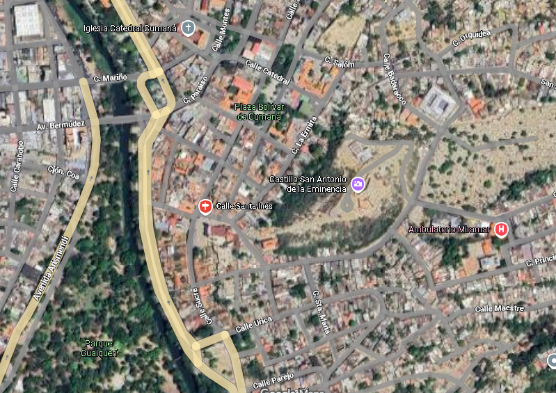

Comunidad de San Francisco
Bienvenidos a nuestro espacio digital
Ubicación Geográfica

La Comunidad de San Francisco se encuentra ubicada en una zona estrategica, de acceso a vías
principales que conectan con sectores cercanos. Su posición geográfica favorece el desarrollo
social,
cultural y económica de sus habitantes
Clima y relieve
El clima puede influir en la vida diaria y en las actividades económicas de la comunidad.
El relieve de la zona determina cómo se distribuyen las viviendas, los caminos y la
agricultura
Importancia de su ubicación
Su posición favorece el desarrollo social, ya que los habitantes pueden acceder a servicios y
centros educativos con facilidad
Facilita el desarrollo económico, porque está cerca de mercados, carreteras o zonas comerciales.
Permite interacciones culturales y actividades comunitarias gracias a la conectividad con otras
zonas cercanas.
Reseña Histórica
____Es una memoria histórica que nació y creció desde el Convento San Francisco, el Río
Manzanares,
el Castillo de Santa María de las Cabeza y el Castillo San Antonio de la Eminencia. La fecha
aproximada de su establecimiento data de la reconstrucción del Convento de San Francisco, de la
Cédula Real del 25 de marzo de 1651. Sus dos plazas, San Francisco (luego Ribero) y Quetepe
(antiguo cementerio) y sus pintorescas calles, Urica, Luneta, las Flores, Santa María, Sucre y
el Cementerio hoy Badaracco Bermúdez, ha sido cuna y jardín de ilustres personajes y de
acontecimientos particulares.
____El General de Brigada Domingo Montes nació en este barrio el 1 de Noviembre de 1784, en la
calle
Úrica. Donde tuvo un gran desempeño en el servicio militar al lado del General en Jefe, José
Francisco Bermúdez, Santiago Mariño, Antonio José de Sucre, Francisco Vicente Parejo y Bernardo
Bermúdez. En esta misma calle, nació el Dr. Jesús Sanabria Bruzual el 21 de enero de 1867,
cofundador de la Sociedad Médica, en 1916 y su presidente entre 1919 y 1920. En la calle “Las
Flores” nació y vivió Don José Acuña, decano de los periodistas orientales, fundador en 1925 del
periódico “Renacimiento”, maestro de escuela; diputado a la Asamblea Legislativa del Estado y
Presidente de ese cuerpo en 1937.
____El 17 de enero de 1929 un terremoto de magnitud 7° sorprende a Cumaná, destruyendo más de
3500
viviendas, el Teatro de Cumaná (hoy Catedral), destrucción parcial de la Iglesia Santa Inés, del
Castillo San Antonio de la Eminencia entre otras obras civiles de importancia para la ciudad,
pero hubo una calle, donde sus viviendas no sufrieron prácticamente daños, la calle Las Flores
de San Francisco, motivo por el cual la llamaron calle “La mano de Dios”, porque solo Dios podía
haber obrado de tal manera que las casas de esa calle se mantuviesen intactas ante el devastador
sismo.
____Otro acontecimiento significativo ocurrido en este barrio, lo representó el fusilamiento
del Coronel Ribero. El 27 de septiembre de 1815 un día lluvioso y con el anuncio de las
campanas, a Ribero lo trajeron desde el Castillo de San Antonio, en cuyas mazmorras pasaron sus
últimos días; hasta la Plaza San Francisco (plaza Ribero), lo obligaron a arrodillarse y ante
sus familiares, amigos y demás presentes, lo fusilaron. Sin embargo, su cuerpo no fue dado a sus
dolientes. Lo descuartizaron y exhibieron en varios sitios de Cumaná y de Cariaco.
En la actualidad y desde hace varios años, el barrio San Francisco se viste de celebración, con
la conmemoración de la fundación de Cumaná. Esta comunidad forma parte de las tradicionales
Fiestas “Noches de Antaño”. Las fachadas de sus calles principales están adornadas con
mobiliario de la época colonial, ofreciendo bebidas, dulces y comidas tradicionales. Así mismo,
sus habitantes se visten de antaño, para recibir a los visitantes que recorren sus calles para
recordar las costumbres de la Cumaná de los siglos XIX y XX.